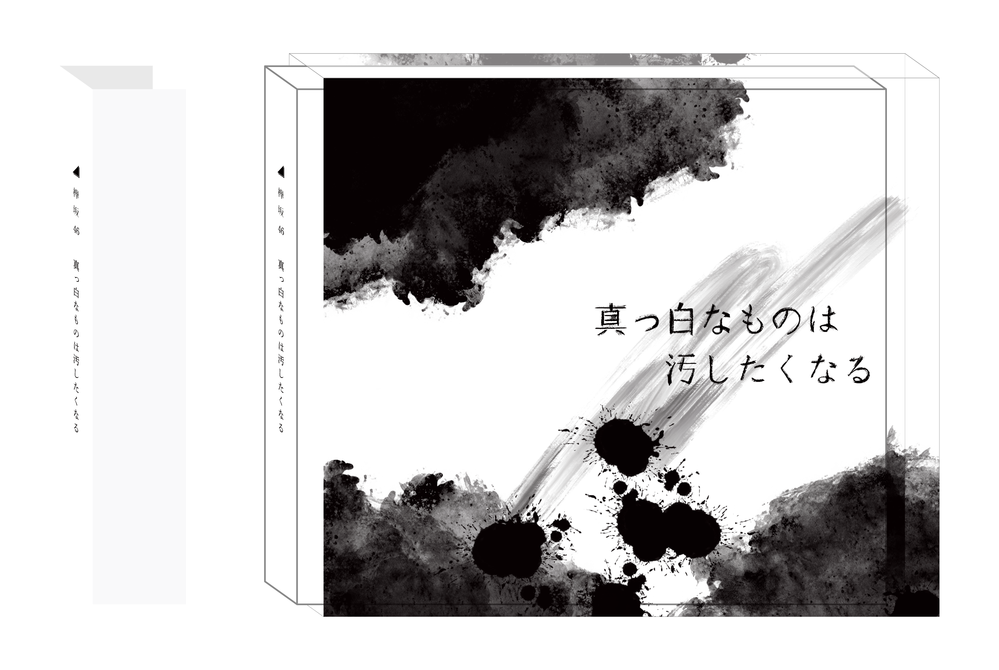

CDジャケット
2020.12
制作環境 illustrator,
欅坂46の真っ白なものは汚したくなるのアルバムをもとに自分なりにジャケットを作成した。 題名にあるように “真っ白なもの” を表紙と裏で表し、 “汚す”をカバーで表現した。 中身を真っ黒にすることで外とは対照的になるようにデザインし、ブックレットは歌詞のメッセージが 暗い表現になるのに合わせて背景がだんだん黒くなる様に表現した。
カバー・ジャケット
レーベル・ジャケット・ブックレット

欅坂46の真っ白なものは汚したくなるのアルバムをもとに自分なりにジャケットを作成した。 題名にあるように “真っ白なもの” を表紙と裏で表し、 “汚す”をカバーで表現した。 中身を真っ黒にすることで外とは対照的になるようにデザインし、ブックレットは歌詞のメッセージが 暗い表現になるのに合わせて背景がだんだん黒くなる様に表現した。